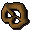
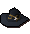
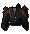

")
Holiday Items Guide
Holiday Items
| Item | Date Released | Description |
![[image]](../../img/main/kbase/guides/holiday/pumpkin.gif) Pumpkin |
Hallowe'en 2001 | These were dropped in October 2001, lucky players picked them up and kept them. They can be eaten to restore 140 life points. |
![[image]](../../img/main/kbase/guides/holiday/cracker.gif) Christmas cracker |
Christmas 2001 | Christmas crackers can be pulled for a partyhat and other miscellaneous items. To pull a cracker, use it on another player. |
![[image]](../../img/main/kbase/guides/holiday/blue_partyhat.gif) ![[image]](../../img/main/kbase/guides/holiday/green_partyhat.gif) ![[image]](../../img/main/kbase/guides/holiday/white_partyhat.gif) ![[image]](../../img/main/kbase/guides/holiday/red_partyhat.gif) ![[image]](../../img/main/kbase/guides/holiday/yellow_partyhat.gif) ![[image]](../../img/main/kbase/guides/holiday/purple_partyhat.gif) Partyhat |
Obtained from Cracker | Partyhats are obtained from pulling Christmas crackers. |
![[image]](../../img/main/kbase/guides/holiday/easter_egg.gif) Easter egg |
Easter 2002 | Easter eggs were a drop which lucky players picked up. They can be eaten to restore 120 life points. |
![[image]](../../img/main/kbase/guides/holiday/mask_blue.gif) ![[image]](../../img/main/kbase/guides/holiday/mask_red.gif) ![[image]](../../img/main/kbase/guides/holiday/mask_green.gif) Halloween mask |
Hallowe'en 2002 | These were dropped in October 2002, lucky players picked them up and kept them, you can wear them to cover your entire head. |
![[image]](../../img/main/kbase/guides/holiday/santa_hat.gif) Santa hat |
Christmas 2002 | Santa hats were a drop which lucky players picked up. They can be worn on your head. |
![[image]](../../img/main/kbase/guides/holiday/bunny_ears.gif) Bunny ears |
Easter 2003 | In April 2003, the first of the untradable holiday items appeared. If you lose your bunny ears, you can get them replaced by visiting the clothes shop in Varrock. |
![[image]](../../img/main/kbase/guides/holiday/scythe.gif) Scythe |
Hallowe'en 2003 | The scythe was dropped for Halloween 2003. Like the bunny ears, this was also untradeable and, if lost, a replacement can be found by visiting Varrock clothes store. |
![[image]](../../img/main/kbase/guides/holiday/yoyo.gif) Yo-yo |
Christmas 2004 | The next holiday event came with the arrival of Santa over both members and non-members worlds. If you visited Santa, he gave you a yo-yo, which you can use to do a variety of tricks. Diango replaces any lost yo-yos. |
![[image]](../../img/main/kbase/guides/holiday/rubber_chicken.gif) Rubber chicken |
Easter 2005 | The Easter Bunny made an appearance, and needed your help giving out eggs if you were to claim a reward. The Bunny gave you a basket of eggs to give out to other players within two minutes. After skipping around and giving out eggs, you were given a rubber chicken, which can be used to 'Whack' other players, or do a chicken dance. Diango replaces lost chickens. |
![[image]](../../img/main/kbase/guides/holiday/zombie_head.gif) Zombie head |
Hallowe'en 2005 | For insulting a zombie south of Lumbridge you not only unlocked the 'Scared' emote, but also made a zombie lose his head! This head was used to scare the nearby children of Lumbridge to drop their sweets. You could also talk to the head or display it to other people. If you have lost your zombie head, you can find one by talking to Diango in Draynor Village. |
![[image]](../../img/main/kbase/guides/holiday/hat1.gif) ![[image]](../../img/main/kbase/guides/holiday/hat2.gif) ![[image]](../../img/main/kbase/guides/holiday/hat3.gif) ![[image]](../../img/main/kbase/guides/holiday/hat4.gif) ![[image]](../../img/main/kbase/guides/holiday/scarf1.gif) ![[image]](../../img/main/kbase/guides/holiday/scarf2.gif) ![[image]](../../img/main/kbase/guides/holiday/scarf3.gif) ![[image]](../../img/main/kbase/guides/holiday/scarf4.gif) Hats and scarves ![[image]](../../img/main/kbase/guides/holiday/red_puppet.gif) ![[image]](../../img/main/kbase/guides/holiday/blue_puppet.gif) ![[image]](../../img/main/kbase/guides/holiday/green_puppet.gif) Puppets |
Christmas 2005 | In December 2005 there was a Christmas crisis, and players were asked to help Diango who had a huge order of toys placed by a mysterious customer. He hired a band of itinerant pixies to manufacture the order, but they turned out to be totally hopeless. There were four hats, obtainable for helping make and deliver boxes of marionettes to the members' gates. For the scarves, you had to paint baubles, box them and give them to the fairies. After this, you could also use some more baubles on Varrock's Wintumber tree. When fully decorated, a present appeared underneath, a fully working puppet just for you, available in a variety of colours. If you lose your hats, Diango will replace them, and a replacement puppet can be found in the Christmas workshop. |
![[image]](../../img/main/kbase/guides/easter_event/easter_ring.gif) Easter Ring |
Easter 2006 | The Easter Bunny needed help giving out eggs yet again. He tried to hypnotise bunnies to take eggs to the children, but it simply wasn't working. Players who found out about the plot and helped the Easter Bunny not only unlocked a festive 'Bunny hop' emote, but also received the 'Easter ring' - a magical ring that transforms the wearer into a Easter egg similar to the ones available. If you have lost your ring, Diango will replace it. |
![[image]](../../img/main/kbase/guides/holiday/halloween_event/skelhead.gif) ![[image]](../../img/main/kbase/guides/holiday/halloween_event/skeltop.gif) ![[image]](../../img/main/kbase/guides/holiday/halloween_event/skellegs.gif) ![[image]](../../img/main/kbase/guides/holiday/halloween_event/skelgloves.gif) ![[image]](../../img/main/kbase/guides/holiday/halloween_event/skelboots.gif) Skeleton costume ![[image]](../../img/main/kbase/guides/holiday/halloween_event/jackolantern.gif) Jack o'Lantern |
Hallowe'en 2006 | Diango had some issues with ghosts at Hallowe'en, and needed to be rid of them before he got too far behind with his Christmas schedule! Players who 'busted' the ghosts were rewarded with a full skeleton suit and mask. Aside from this trick-or-treat disguise, players could unlock the 'Scared' emote. A further reward was available to those who chopped the roots of the evil tree that had grown through the floor of the toy factory: a Jack o'Lantern mask. |
![[image: reindeer hat]](../../img/main/kbase/guides/holiday/christmas_06/reindeer_hat.gif "reindeer hat") Reindeer hat ![[image: wintumber tree]](../../img/main/kbase/guides/holiday/christmas_06/wintumber_tree_obj.gif "wintumber tree") Wintumber tree |
Christmas 2006 | Children were childernapped from Musa Point at Christmas, and only the old sea dog Shanty Claws knew how to get them back. Players who went into the secret depths of the gublinch caves and froze childernappers with snowballs were rewarded with a reindeer hat (which can be 'operated' to activate an emote) and members also received a festive Wintumber tree to decorate their house, so they can feel the Christmas spirit all year round! |
![[image: chicken suit including hat, wings, trousers and feet]](../../img/main/kbase/guides/holiday/easter_07/chickensuit.gif "chicken suit including hat, wings, trousers and feet") Chicken costume |
Easter 2007 | The Easter Bunny tried to cut corners with Easter, ordering animated chocolate rabbits that could deliver themselves. Needless to say, it all went wrong! Diango accidentally made kebbits instead, and these soon hopped away from the hapless Easter Bunny. Players who helped the Bunny retrieve the kebbits, crush them in a very strange bowling arena and then get back his priceless rabbit mould were treated with the chicken suit and enhanced 'Flap' emote. |
![[image: The Grim Reaper's Hood]](../../img/main/kbase/guides/holiday/halloween_07/reaper_hood.gif "The Grim Reaper's Hood") The Grim Reaper's Hood |
Hallowe'en 2007 | Death opened the dark portal to his house at Hallowe'en, all in the interests of getting some wandering adventurers to tidy up for him. Surviving all the horrors and terrifying visions of Death's eerie abode isn't easy, and players who made it through were rewarded with one of Death's spare hoods - all the better to reap with! They were also taught the secret of raising the dead to grab their ankles with the 'Zombie hand' emote. |
![[image: snow globe]](../../img/main/kbase/guides/holiday/christmas_07/snow_globe.gif "Snow globe") Snow globe |
Christmas 2007 | Snow imps ran rampant around the cities of RuneScape calling forth drifts of magical snow. Players were able to collect snow for snowball fights and to build snowmen together. Players could also travel to the Land of Snow, domain of the Queen of Snow, to make other 'combat' snowmen, which would happily fight amongst each other for everyone's entertainment. Players were given enough to shake and kick holes in the ground. The Queen of Snow gave them the gift of a snow globe (for snowballs all year round) and snowmen taught them how to do the ever so funky 'Snowman dance' emote. |
![[image: Chocatrice Cape]](../../img/main/kbase/guides/holiday/easter_08/chocatrice_cape.gif "Chocatrice Cape") Chocatrice cape |
Easter 2008 | The giant rabbit himself asked players for a hand raising a chocatrice to smite some thieving critters that ate all the Easter eggs. Players who managed to tame the gooey beast and restock the Easter Bunny's supply of molten chocolate were rewarded with a fancy new cape that can be operated to perform a new emote. |
![[image: warlock costume]](../../img/main/kbase/guides/holiday/Halloween_08/warlock.gif "Warlock costume, including top, legs and cloak") Warlock costume ![[image: witch costume]](../../img/main/kbase/guides/holiday/Halloween_08/witch.gif "Witch costume, including top, skirt and cloak") Witch costume |
Hallowe'en 2008 | After her skeletal ox, Babe, became too ill to pull her caravan, Maggie the witch asked players to help her gather the delicious Hallowe'en candy that she had heard so much about. Players had to travel around Rimmington, Port Sarim and Draynor, trick-or-treating the locals in order to obtain lots of scrumptious treats for Maggie. Players that succeeded in gathering enough treats were rewarded for their efforts with either a witch's costume, or a warlock's costume. |
 Cornucopia |
Thanksgiving 2008 | Turkeys fled the Thanksgiving carnage and found themselves in RuneScape. Obviously, they didn't realise what they were waddling into, and adventurers across the land were able to hunt them down mercilessly, or simply spot the more cunning birds who took some notes from the penguins and disguised themselves. Players who either spotted all of the disguised turkeys or slaughtered enough of the less intelligent birds were rewarded with the cornucopia, which can be filled with 140 life points' worth of food. Players who lose theirs can recover it from Diango. If you miss the event, you might be lucky enough to find a cornucopia dropped by certain birds. |
![[image: Santa Coat]](../../img/main/kbase/guides/holiday/christmas_08/santa_coat.gif "Santa Coat") ![[image: Santa Trousers]](../../img/main/kbase/guides/holiday/christmas_08/santa_trousers.gif "Santa Trousers") ![[image: Santa Gloves]](../../img/main/kbase/guides/holiday/christmas_08/santa_gloves.gif "Santa Gloves") ![[image: Santa Boots]](../../img/main/kbase/guides/holiday/christmas_08/santa_boots.gif "Santa Boots") Santa costume ![[image: Ice amulet]](../../img/main/kbase/guides/holiday/christmas_08/ice_necklace.gif "Ice amulet") Ice amulet |
Christmas 2008 | When Jack Frost escaped from the Land of Snow, valiant players were asked to track him down with the help of a snow imp. Jack wasn't too keen on going home just yet, though, and adventurers had to use his own trickery against him in time for the Queen of Snow to take charge of her belligerent and snotty teenaged son. Players that defeated Jack Frost were rewarded with a Santa costume and were allowed to keep the ever-so-pretty ice amulet. |
![[image: Easter carrot]](../../img/main/kbase/guides/holiday/easter_09/carrot_of_doom.gif "Easter carrot") Easter carrot |
Easter 2009 | The Easter Bunny was looking to retire, but his lazy, good-for-nothing, spoilt brat of a son and hare has absolutely no interest in taking over from his dad. Those generous adventurers who lent the bizarre bunny a hand had to convince his wayward child that there's profit in supplying RuneScape with holiday treats, not to mention fixing up the whole Egg Plant... Players that used the power of words (and a few tools) to bring Easter Bunny Jr. face-to-face (or twitching-nose-to-twitching-nose) were rewarded with the Easter Carrot, a mighty weapon capable of defeating precisely nothing. |
![[image: eek the spider]](../../img/main/kbase/guides/holiday/halloween_09/spider.gif "eek the spider") Eek the Spider ![[image: web cloak]](../../img/main/kbase/guides/holiday/halloween_09/spidercape.gif "web cloak") Web cloak |
Halloween 2009 | The Grim Reaper found an unwanted spider in his bath and was too...um...busy to get rid of it. Willing diplomats were sent to the Spider Realm where they chatted to the Spider Queen and agreed to cover the Reaper's home with customary spiderwebs. Players who were exceptional at covering Grim's house were rewarded with Eek, an enthusiastic spider who can be chatted to and placed in your POH menagerie, and a fetching web cloak. |
![[image: xmas ghost hood]](../../img/main/kbase/guides/holiday/christmas_09/xmas_ghost_hood.gif "xmas ghost hood") ![[image: xmas ghost top]](../../img/main/kbase/guides/holiday/christmas_09/xmas_ghost_top.gif "xmas ghost top") ![[image: xmas ghost bottoms]](../../img/main/kbase/guides/holiday/christmas_09/xmas_ghost_bottoms.gif "xmas ghost bottoms") Christmas ghost costume ![[image: candy cane]](../../img/main/kbase/guides/holiday/christmas_09/candy_cane.gif "candy cane") Candy cane |
Christmas 2009 | Ebenezer Scourge stole the Queen of Snow's Christmas feast and imprisoned Santa in a bid to get some peace and quiet. Hungry adventurers teamed up with snow imp pals to scare old Scourge out of his miserly ways. As part of the plan, players created a 'Ghost of Christmas' costume, which they were able to keep afterwards. Santa, once freed, also rewarded players with a wieldable candy cane. As a snow imp might put it: "It's fer fightin' not fer eatin'." It's not good fer fighting', mind, but it looks nice. |
![[image: easter squirrel ears]](../../img/main/kbase/guides/holiday/easter_10/squirrel_ears.gif "Squirrel ears") Squirrel ears |
Easter 2010 | The Easter Bunny Jr. had taken on his father's role with gusto, but found that he'd bitten off more than he could chew with his ambitious plans for a more cosmopolitan Easter. A stalwart adventurer was needed to kick the factory's rag-tag staff into gear and produce sugary treats for all. Players who helped the Easter Bunny complete his order were awarded this rather fetching set of squirrel ears. Those who completed the order on schedule received a more potent pair capable of summoning an additional fuzzy companion. |
|  Oktoberfest pretzel |
Oktoberfest 2010 | The Varrock Tourist Office employed the services of Pretzel Bert, otherwise known as 'Bert', to celebrate the longstanding Oktoberfest. The festival is an opportunity to drink the existing stocks of beer before the new season begins. Players who visited Pretzel Bert received a pretzel to eat, giving them 1 life point of health. This item disappeared once the Oktoberfest event finished. |
![[image: bone brooch]](../../img/main/kbase/guides/holiday/Halloween_10/bone_brooch.gif "Bone Brooch") Bone Brooch |
Halloween 2010 | As a bony bachelor, Grim doesn't get the opportunity to let his hair down often. So, when Pumpkin Pete offered to put on an impromptu Halloween party at his home, Grim was remarkably happy to oblige. The entertainment came in the form of dancing spiders, werewolf backing singers and the renowned Zabeth Corvid: a musician who Grim has followed ever since he reaped him. For getting the entertainment back on track, players were rewarded with a bone brooch, which could transmogrify them into a pile of bones with one touch. |
Miscellaneous Items
| Item | Description |
![[image]](../../img/main/kbase/guides/holiday/magnifying_glass.gif) Magnifying glass |
Those who succeeded in unravelling the mystery of 2009's Cryptic Clue Fest were given the magnifying glass. |
![[image]](../../img/main/kbase/guides/holiday/investigators_trousers.gif) Investigator's outfit |
Cryptic Clue Fest II proved to be even tougher to crack for players in 2010, but those who persevered received this snazzy investigator's outfit. |
Discontinued Items
| Item | Description |
![[image]](../../img/main/kbase/guides/holiday/disc_returning.gif) Disk of Returning |
Previously in RuneScape there was an area known as the 'Black Hole', where rule breakers were held. Normal players could visit this area by purchasing this disk, and spinning it to return from the Black Hole. |
Commemorative Items
Please note that this item is NOT tradeable. Also, this item is purely cosmetic.
| Item | Description |
![[image]](../../img/main/kbase/guides/holiday/runefest.gif) Flagstaff of Festivities |
Those who have bought tickets for the RuneFest 2010 event will be emailed a code for an item to be gained in game. By right-clicking on Diango in Draynor Village and selecting 'Redeem Code', these players are able to type in their exclusive number and gain the flagstaff of festivities. For more information about RuneFest 2010, visit the RuneFest website. The flagstaff can be wielded, or placed proudly in the ground as long as no other flagstaff is nearby. Other players can then read it to see which player owns the flag and to view details of the event. When a flagstaff is placed, you will keep a flagstaff item in your inventory. This item can be wielded or right-clicked to recall the placed flagstaff, or right-clicked to find its location on the world map. |

|
More articles in Holiday Guides
|
|